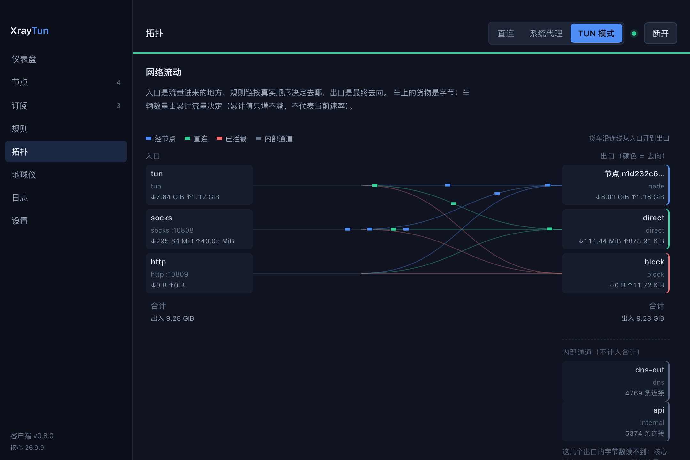

XrayTun：macOS 上的 Xray 图形客户端，用原生 TUN 模式接管系统流量
XrayTun 是一个面向 macOS 的 Xray 图形客户端。它调用 Xray-core 的原生
tun 入站（内置 gVisor 协议栈）创建 utun 网卡，用
0.0.0.0/1 与 128.0.0.0/1 两条路由拆分默认路由，并接管系统
DNS，从而让整台 Mac 的流量按规则走代理。只有「建网卡、装路由、改 DNS」这三件事在特权
helper（root 守护进程）里执行，Xray 核心本身以普通用户身份运行。
v0.8.30 正在发布 · 下载见 Releases 页面 备用 .zip（发布后同页提供）

它解决什么问题
macOS 的「系统代理」只覆盖遵守代理设置的应用。 系统代理是一个 HTTP/HTTPS/SOCKS 设置项，很多应用（尤其是自带网络栈的应用、命令行工具、游戏） 不会读它。XrayTun 的 TUN 模式在网络层接管默认路由，因此不需要每个应用单独支持代理。
改系统网络配置是有风险的操作。 TUN 模式要创建网卡、改路由、改 DNS；如果中途崩溃或断电，机器可能就断网了。XrayTun 在动手之前先把「我要开始改了」写进磁盘快照，每改一步增量更新，启动时如果发现上次留下没回滚的 会话就立刻回滚；退出应用时也会还原网络配置。
「连上了」不等于「能用」。 节点可能握手成功却转发不了流量。XrayTun 的看门狗每 10 秒经隧道发一次真实请求，连续 2 次失败就自动重建隧道；重建失败时退回直连，而不是把你留在断网状态。
分流规则是否命中，通常只能猜。 XrayTun 内置一个判定器：输入域名或 IP，用运行中的真实规则与 geoip/geosite 数据算出它命中哪条规则、从哪个出口出去。
核心能力
下面每一条都能在 GitHub 仓库的文档里逐条核对（见链接）。这一节同时也说明 本应用刻意不做的事情，因为知道边界比看功能清单更能帮你判断它是否适合你。
协议与订阅
- 节点协议支持 vmess、vless、trojan、shadowsocks、socks、http。
-
不支持 ShadowsocksR（
ssr://）：解析到ssr://会明确报错，不会静默忽略。 - 订阅支持 4 种格式，自动嗅探：Xray JSON 配置、Clash / Mihomo YAML、 整体 base64 的链接列表、明文链接列表。
-
订阅正文里混入一两条不支持的链接（例如
hysteria2://）不会导致整个订阅失败， 只跳过并记入日志。
分流
- 内置 4 个分流预设：全局代理、绕过大陆（默认）、白名单代理、全部直连。
- 支持 自定义规则；自定义规则追加在预设之后执行，不会插到预设前面。
- 规则顺序敏感：Xray 自上而下取第一条命中的规则，所以「广告拦截」必须排在 「大陆直连」之前。
-
支持 geoip / geosite 匹配（如
geoip:cn、geosite:cn）；geoip.dat与geosite.dat随包附带。 - 规则的界面编辑目前没有：自定义规则以只读列表展示，需要直接编辑设置文件。
DNS
- 4 种 DNS 策略：全部走代理解析、按规则分流解析（默认）、全部本地直连解析、 自定义服务器。
- 支持 Fake-IP，默认关闭。
- 提供 DNS 解析器探测与国内外分组对比（两组走的是不同路径，因此分开测量、分开显示）。
接管方式与权限
- 三种模式：直连 / 系统代理 / TUN。
-
TUN 模式使用 Xray-core 原生
tun入站（内置 gVisor 协议栈），不依赖 tun2socks 等旁路进程，UDP 与 QUIC 由同一协议栈处理。 -
路由用
0.0.0.0/1与128.0.0.0/1拆分而不是替换默认路由：最坏情况是「一部分流量走错路」，而不是「完全没有默认路由」。 - 系统代理模式不会修改 macOS 的系统代理设置（截至 v0.8.30）。它只在本机启动 SOCKS5（127.0.0.1:10808）与 HTTP（127.0.0.1:10809）入站，需要你自己把应用指向这两个端口； 要自动接管请用 TUN 模式。
- 权限最小化：建 utun、装路由、改 DNS 由特权 helper 完成， Xray 核心以普通用户身份运行；helper 只接受来自本应用、通过代码签名校验的连接。
- 首次使用需要在设置里安装特权 helper（会要求一次管理员密码）。
可靠性与更新
- 开机自启：通过 macOS 的
SMAppService登录项注册。 - 自动恢复：开机后若上次是连接状态，会在后台最多重试 24 次 × 5 秒（约 2 分钟）；隧道看门狗每 10 秒探测一次，连续 2 次失败自动重建，重建失败退回直连。换 Wi-Fi 与合盖唤醒属于同一套自愈逻辑。
- 崩溃安全：改网络配置前先落盘会话快照，每步增量更新；helper 启动时先回滚遗留会话；退出应用会还原网络配置。
-
自更新：检查 GitHub Release → 下载 zip → 比对
SHA256SUMS.txt→ 替换应用并重启。这里要如实说明：只校验 SHA256，没有签名校验， 因此它能防「下载损坏」，防不了「上游被换掉」。 - 流量计数跨核心重启续接：核心重启会让 Xray 的累计计数器归零，XrayTun 把归零前的量接上并如实显示「核心重启过 N 次」，而不是把流量显示成突然清零。
观测（这一块是本项目的设计取舍）
- 拓扑页：按运行中的真实配置画出入口 → 规则链 → 出口的结构关系。 连线表达的是配置上的结构关系，不是「某条流量实际走了哪条线」——Xray 只有按入口、按出口的聚合计数器，没有逐条规则的计数器。
-
地球仪：画出本机公网出口到出口节点的大圆航线，两端标出城市。位置查询来自第三方（
ipwho.is与ip-api.com），查询会把被查的 IP 发给这些服务；大陆轮廓是 2° 分辨率的粗略示意，不是导航级海岸线。 -
最近连接：从 Xray 访问日志里取每条连接的时间、来源、目标、
[入站 → 出站]、域名， 点一条就在拓扑上高亮它经过的路径。域名来自日志的时序配对（sniffed行与accepted行按时间就近配对），可能配错：界面用*标注并显示精确到微秒的配对时延；约一半连接本来就没有域名。 -
日志与诊断：等级筛选、来源区分、一键生成诊断报告（在后端脱敏：订阅 URL
只保留 host，UUID 替换为
<uuid>）。
本应用刻意不做（也不打算假装能做）
- 每条连接用了多少字节、持续多久：Xray 的统计服务只有聚合计数器，访问日志只记录连接建立、不记录结束。界面里没有这两个数字。
-
dns-out与api的字节数：Xray 不统计 UDP 出站流量与本机回环流量，这两个出口的字节计数器恒为 0。XrayTun 把它们单独列为「内部通道」，改用连接数表示活跃度；而block出口的 0 是真的 0。 - 「当前活跃连接数」：连接从列表里消失不等于已关闭（可能只是被滚动缓冲区挤掉）。
- 没有 Windows / Linux / 移动端版本；界面目前只有中文；没有规则可视化编辑、节点分组、浅色主题。
下载
v0.8.30 正在发布 · 下载见 Releases 页面
| 文件 | 大小 | 链接 |
|---|---|---|
| dmg（主） | 发布后填入（见 Releases） | XrayTun_0.8.30_x86_64_arm64.dmg |
| zip（备用） | 发布后填入（见 Releases） | XrayTun_0.8.30_x86_64_arm64.zip |
| 校验和 | — | SHA256SUMS.txt |
| 所有版本 | — | GitHub Releases |
运行要求
- macOS 13.0 或更高。
- Apple Silicon 与 Intel 都原生支持（同一个通用包）。
-
不需要另外安装 Xray 核心：包内已包含 Xray-core、
geoip.dat、geosite.dat。 - 需要一个可用的 Xray 节点或订阅链接（本应用不自带节点，也不提供节点服务）。
- 首次使用需要一次管理员密码（安装特权 helper）。
校验下载文件（可选，防止下载被截断）
# 与 release 里的 SHA256SUMS.txt 对比
grep XrayTun_0.8.30_x86_64_arm64.dmg SHA256SUMS.txt
shasum -a 256 XrayTun_0.8.30_x86_64_arm64.dmg
两行的哈希应当一致。注意 SHA256SUMS.txt 由
shasum -a 256 ./* 生成，行里带 ./
前缀，所以用 grep 取行再肉眼比对，比直接 shasum -c 更稳。
安装
下载下来的包一定会被 macOS 拦下，这不是文件损坏。下面第 3 步给出三条放行路径， 按你的系统版本任选一条。
第 1 步：拖进「应用程序」
打开下载到的 dmg，把 XrayTun.app 拖进「应用程序」文件夹。
第 2 步：首次打开会被拦住（预期行为，不是包坏了）
你会看到类似「无法验证开发者」或「Apple 无法检查其是否包含恶意软件」的提示。原因是 XrayTun 的安装包是 ad-hoc 签名、未公证的：项目仓库里没有 Apple 的 Developer ID 证书（那需要付费开发者账号），所以 macOS 无法用常规方式验证它。校验结果就是「被拒绝」——这是预期的， 不是下载出错。
第 4 步：在应用里安装特权 helper（TUN 模式需要）
打开 XrayTun → 设置 → 特权助手 → 「安装」。这一步会要求一次管理员密码。只有「创建 utun 网卡、安装路由、修改 DNS」这三件事由 helper 执行，Xray 核心本身以你的普通用户身份运行。
第 5 步：确认装好了
在「设置 → 环境自检」里，helper 应显示「已就绪」；把顶栏的模式切到 TUN 模式， 添加订阅或节点后点「连接」，能正常上网即安装成功。
如果不想要了
退出 XrayTun 会还原网络配置；卸载前先退出应用并卸载 helper（helper 的卸载请求会先回滚网络配置再删文件），避免留下指向 utun 的路由或 DNS。
常见问题
XrayTun 需要我另外安装 Xray 核心吗？
不需要。安装包内已包含 Xray-core 以及 geoip.dat、geosite.dat，位于应用的
Contents/Resources/ 目录，不需要你另外安装；你只需要准备节点或订阅链接。
XrayTun 支持哪些 macOS 版本和处理器？
支持 macOS 13.0 或更高版本，Apple Silicon（arm64）与 Intel（x86_64）都原生支持，两者共用同一个通用安装包。 目前只有 macOS 版本，没有 Windows、Linux 或移动端版本。
打开时提示「无法验证开发者」，怎么办？
这是未公证应用的预期提示，不是安装出错。macOS 15 及以后请走「系统设置 → 隐私与安全性 →
仍要打开」；macOS 14 及更低版本可以右键（Control 点按）应用选「打开」；也可以直接在终端执行
xattr -d com.apple.quarantine /Applications/XrayTun.app 后正常打开。
提示「XrayTun.app 已损坏，无法打开」，是真的损坏了吗？
不是。ad-hoc 签名且未公证的应用会被 Gatekeeper 判定为「被拒绝」，系统用的话术与「损坏」类似。先执行
xattr -d com.apple.quarantine /Applications/XrayTun.app
再打开；如果仍然打不开，用 SHA256SUMS.txt 校验你下载的文件是否完整（见下载区）。
为什么不用 Apple 的开发者签名与公证？
因为签名与公证需要付费的 Apple 开发者账号，项目目前没有 Developer ID 证书。代价就是每次首次安装都要手动放行一次——这是已知且公开的取舍，见仓库的 Release 说明。
为什么一定要安装特权 helper？
因为 TUN 模式必须创建 utun 网卡、修改路由表和系统 DNS，这三件事需要 root 权限。helper 是一个只做这三件事的 root 守护进程，且只接受来自 XrayTun 本应用、通过代码签名校验的连接；Xray 核心本身仍然以你的普通用户身份运行。
「系统代理」模式会自动设置 macOS 的系统代理吗？
不会（截至 v0.8.30）。系统代理模式只在本机启动 SOCKS5（127.0.0.1:10808）与 HTTP（127.0.0.1:10809） 入站，需要你手动把应用或系统代理指向这两个端口。要让整机流量自动按规则走，请使用 TUN 模式。
支持哪些节点协议和订阅格式？
节点协议支持 vmess、vless、trojan、shadowsocks、socks、http；订阅支持 Xray JSON、Clash / Mihomo YAML、base64 链接列表、明文链接列表四种格式，会自动识别。
支持 ShadowsocksR（ssr://）吗？
不支持。Xray-core 不提供 ssr:// 支持，粘贴 ssr://
链接时 XrayTun 会明确报错，而不是静默忽略。
为什么有的出口流量显示 0 B？
因为那是 Xray 统计接口的盲区，不是「没流量」。Xray 不统计 UDP 出站流量（dns-out）与本机回环流量（api），
这两个出口的字节计数器恒为 0；XrayTun 把它们单独列为「内部通道」，改用连接数表示活跃度。而
block（拦截）出口的 0 是真的 0，因为连接被拒绝，本来就没有字节。
「最近连接」里的域名准确吗？
是近似值。Xray 的访问日志里，连接建立行（accepted）不带连接 ID，域名出现在另一行（sniffed），
所以只能按时间就近配对，并发时可能配错。界面用 *
标注配对来的域名，并显示这条的配对时延（微秒），由你判断。另外约一半连接本来就没有域名（IP
直连与内部通道没有 sniffed 行），这是正常状态。
一条连接用了多少流量、持续了多久？
看不到，因为 Xray 没有提供这两个数据。统计服务只有按入口、按出口的聚合计数器，访问日志也只记录连接建立、不记录结束。XrayTun 不会用推测值填补这个空缺。
崩溃或断电会不会把系统网络配置改坏？
会留下残留，但能被自动清掉——这正是本项目投入最多的地方。XrayTun 在修改网络之前先把会话快照落盘，每改一步增量更新；helper 每次启动的第一件事就是回滚磁盘上遗留的会话；正常退出应用时也会还原网络配置。另外如果系统 DNS 还指向隧道内的哨兵地址而隧道已经不在了，界面会明确告诉你原因并给出修复命令。
换 Wi-Fi、合盖唤醒之后需要手动点「连接」吗？
不需要。看门狗每 10 秒经隧道发一次真实请求，连续 2 次失败就自动重建隧道；开机时若上次是连接状态， 会在后台最多重试约 2 分钟，因此开机时 Wi-Fi 还没就绪也能自动连上。重建失败时会退回直连以保证你能上网。 从 v0.8.27 起，界面会显示「正在自动恢复（第 N 次）」，你能看到自愈在进行； v0.8.27 之前的版本只显示「已连接／未连接」，所以那段时间状态会短暂变成「未连接」—— 功能一直是自动的，只是更早的界面没把过程画出来。
自动更新安全吗？
自动更新会从项目的 GitHub Release 下载压缩包，并用 release 里的 SHA256SUMS.txt
校验完整性，校验不通过会拒绝安装。需要如实说明的是：这只校验校验和，没有签名校验，
因此它能防「下载损坏」，但防不了「上游被替换」。真正的签名 + 公证需要 Developer ID 证书。
XrayTun 的许可证是什么？
源码在 GitHub 上公开，并以 MIT 许可发布：仓库里有
LICENSE 文件，
Cargo.toml 也声明 license = "MIT"。随包分发的
Xray-core 采用 MPL-2.0 许可（以独立进程调用，不构成衍生作品），其许可证见 Xray-core
官方仓库；包内的 geoip.dat / geosite.dat 随其上游项目发布。
链接
- 源码仓库：github.com/harodggg/xrayTun
- 全部 Release：GitHub Releases
- 更新记录：CHANGELOG.md
- 设计文档：docs/
- 安装与 TUN 权限说明：docs/02-tun-and-privileges.md
- 分流与 DNS 说明：docs/04-routing-and-dns.md
- 给 AI 的站点摘要：llms.txt